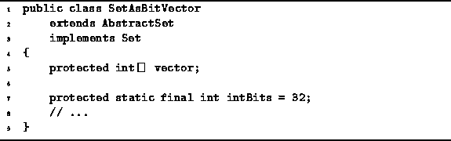

Data Structures and Algorithms
with Object-Oriented Design Patterns in Java
Data Structures and Algorithms
with Object-Oriented Design Patterns in JavaThe Java Virtual Machine does not support the boolean type directly. As a result, the Java compiler converts every boolean variables to an int. Thus, a Java boolean occupies four bytes. However, since there are only the two values true and false, a single bit is sufficient to hold a boolean value. Therefore, we can realize a significant reduction in the memory space required to represent a set if we use an array of bits. Furthermore, by using bitwise operations to implement the basic set operations such as union and intersection, we can achieve a commensurate reduction in execution time. Unfortunately, these improvements are not free--the operations insert, isMember, and withdraw, all slow down by a constant factor.
Since Java does not directly support arrays of bits,
we will simulate an array of bits using an array of ints.
Program  illustrates how this can be done.
The constant intBits is defined as the number
of bits in a single int.
illustrates how this can be done.
The constant intBits is defined as the number
of bits in a single int.

Program: SetAsBitVector fields.
 Copyright © 1998 by Bruno R. Preiss, P.Eng. All rights reserved.
Copyright © 1998 by Bruno R. Preiss, P.Eng. All rights reserved.